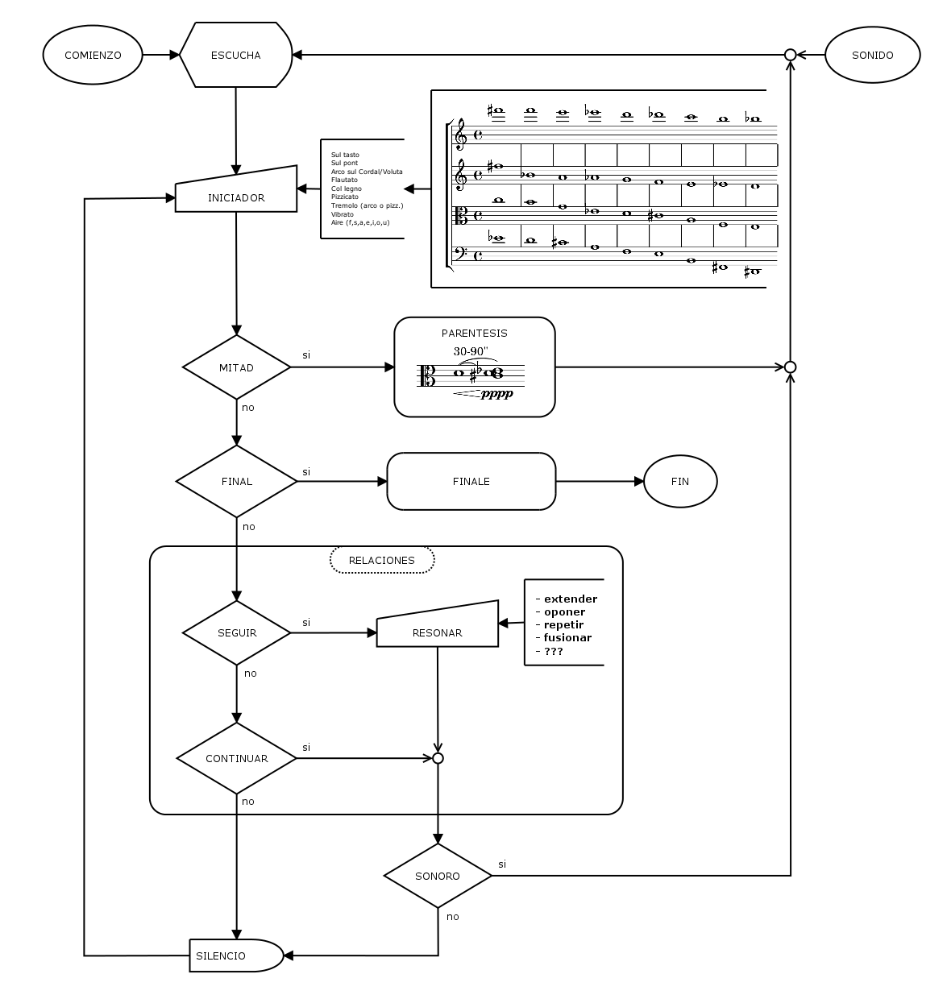
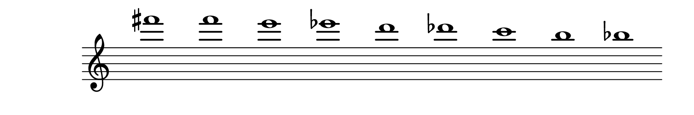
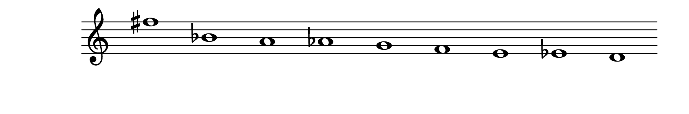
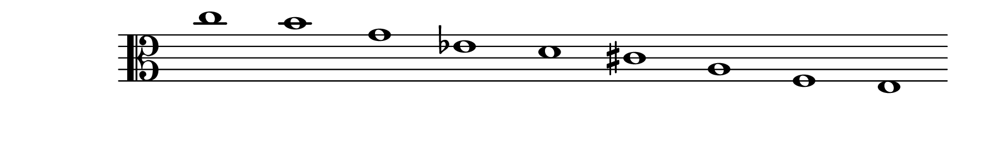
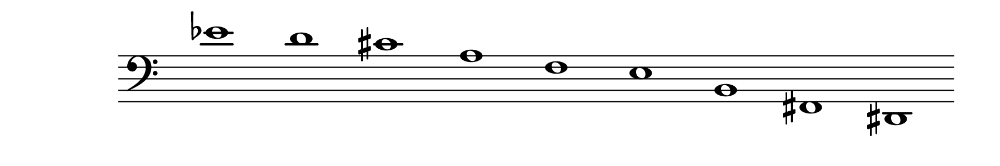
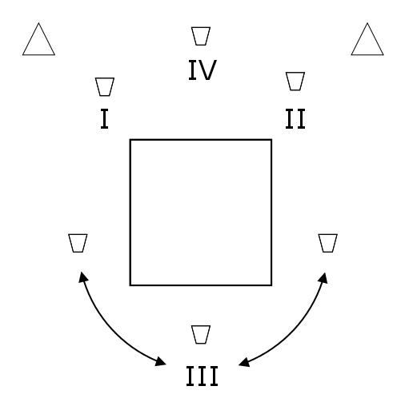

A continuación puede verse un diagrama de la obra.

INICIADORES
Cada intérprete debe reproducir 9 (nueve) sonidos como INICIADORES, que pueden o no causar las RELACIONES.
TÉCNICAS
Los intérpretes deben utilizar todas las siguientes técnicas, combinando de cualquier manera por lo menos 3 (tres):
Sul tasto
Sul pont
Arco sobre Cordal/Voluta
Flautato
Col legno
Pizzicato
Tremolo (arco o pizz.)
Vibrato
Agregar ruido con aire (con cualquier vocal o consonante fricativa, < f > o < s >)
ALTURAS
Los intérpretes deben utilizar todas las siguientes alturas, en esos registros pero en cualquier cuerda:
Violin I

Violin II

Viola

Cello

Al menos 3 deben tocarse como armónicos en cualquier registro.
Se pueden usar cuerdas dobles al combinar cualquiera de las alturas.
El orden de las notas no debe estar preestablecido. Tampoco debe seguirse el orden de las notas como están escritas en la partitura.
NO AFINAR
Una vez que se comienza a tocar una altura, se debe mantener esa altura. Nunca ajustar la afinación ni cambiar repentinamente las alturas si la altura no es exacta o no es la deseada. Si decide hacer glissandi, que sean los más lentos del mundo.
RELACIONES
Los intérpretes deben decidir entre seguir o no seguir el sonido, entendiendo a 'sonido' como todo lo que tenga algún efecto acústico en el momento, ya sea de los otros intérpretes, de la pista, del lugar, de los alrededores, la memoria, etc.
Las relaciones deberían durar entre aproximadamente 15 y 30 segundos.
SEGUIR EL SONIDO
La acción de seguir el sonido debe realizarse como una forma (sonora o no) del resonar, y puede significar:
Extender el sonido.
Oponerse al sonido.
Repetir el sonido.
Fusionarse con el sonido.
Realizar cualquier otra resonancia que puedan imaginar, con su instrumento, su cuerpo o con cualquier elemento.
Excepción
La única excepción de esta regla es que no pueden usarse las alturas utilizadas como iniciadoras, porque la resonancia debe ser diferente:
Por ejemplo, si un intérprete toca un iniciador en Si bemol, entonces no puede sonar ni otro Si bemol, ni ninguna de las alturas escritas.
NO SEGUIR EL SONIDO
La acción de no seguir el sonido puede significar:
Continuar: continuar haciendo lo que se esté haciendo.
Silencio: casi imperceptiblemente detener lo que se esté haciendo y luego permanecer en silencio hasta realizar algún futuro iniciador o relación.
PARENTESIS
Debe tocarse un paréntesis una vez pasada la mitad de la obra.
La viola debe tocar el Re central pppp, sobre la cuerda de Sol, y con una duración de 30-90 segundos.
Los otros tienen que dejar de hacer lo que están haciendo cuando se dan cuenta de que esto está sucediendo, tocar en pppp utilizando cualquiera de las técnicas indicadas (la duración está determinada por la viola):
Un intérprete debe tocar la misma altura.
Los dos intérpretes restantes deben tocar cada uno una segunda menor adyacente: Mib y Reb.
VIOLA
Moverse arbitrariamente entre las tres sillas (Ver Cosas para Viola).
Puede realizar cualquiera de las siguientes acciones en cualquier momento, pero también se deben realizar en los momentos indicados. Deben realizarse muy lentamente y en el rango dinámico más bajo posible:
Se debe llenar un vaso de agua hasta la mitad (3:15)
Se debe abrir una lata de gaseosa (6:43)
Se debe empujar una silla durante 5-10 segundos (7:10)
Debe sonar una bolsa de plástico durante 10-25 segundos (8:00)
Solo una vez, hacer una acción de su elección para seguir algún sonido de la pista.
Estas acciones pueden reemplazar cualquiera de los iniciadores, pero no el paréntesis.
Antes de que finalice la cinta (11:00), o en caso que ya haya finalizado, los intérpretes deberían iniciar el final. El final consiste en tocar lo mismo que en paréntesis pero transpuesto a cualquier intervalo, y con cualquier técnica. La dinámica debe seguir siendo pppp. La única condición es que cualquier intérprete menos la viola debe iniciar la primera nota; el resto debe continuar el paréntesis de manera transpuesta.
Los intérpretes (y no la pista) deben finalizar la obra.
INDICACIONES GENERALES
UBICACIÓN
Los violines 1 y 2 deben colocarse en los dos extremos del escenario, con el violoncello en el centro y en el fondo del escenario. Permanecen sentados.
La viola debería poder sentarse detrás de la audiencia, con suficiente espacio para pararse y moverse.
Se deben colocar dos altavoces detrás de los violines, y el estéreo debe ser audible.
A continuación puede verse un diagrama de la ubicación de los instrumentistas.

ILUMINACIÓN
La sala debe permanecer oscura todo el tiempo, excepto los cronómetros que iluminan a los intérpretes. Si los cronómetros no tienen luz, debe haber luces individuales y portátiles que apunten a cada intérprete.
PARTITURA
Los intérpretes no deben usar una partitura ni ninguna otra ayuda visual que no sea un cronómetro. Deben tratar de recordar qué hacer. Sin embargo, si se olvidan algunas cosas, solo deben seguir tocando.
COSAS
PARA VIOLA
3 (Tres) sillas detrás de la audiencia (centro, izquierda y derecha)
Espacializar los siguientes elementos cerca o debajo de algunas de sus sillas:
1 (Un) vaso de agua
1 (Un) jarra con agua
1 (Un) lata nueva de gaseosa
1 (Un) bolsa vacía de plástico
1 (Un) elemento de elección personal
PARA LA PISTA
Opción en tiempo real:
1 (Un) instrumentista dedicado a controlar la pista (Ver Anexo)
1 (Una) mezcladora conectada a los dos parlantes.
1 (Una) interfase de audio (USB), conectada a la mezcladora con cables TRS.
1 (Una) computadora con Pure Data, conectada con la interfase via USB.
Opción en tiempo diferido:
1 (Un) reproductor de audio conectado a los dos parlantes.
PARA INSTRUMENTISTAS
Un cronómetro para cada instrumentista (con o sin luz)
Una luz (led) individual y portátil para cada instrumentista
Una silla para cada instrumentista (excepto Viola que necesita tres)
{kind=link}
{kind=link}